Computer Vision III (IN2375) — Notes 4: Modern Approaches
This note covers the last three lectures.
First we introduce transformers by extending the idea from correlation layer we met in video object segmentation already compares features against features, which is exactly what attention generalises. From there we develop self-attention and positional encoding, scale up to the ViT and Swin Transformer backbones, and we see how transformers reshape the traditional computer vision tasks. DETR casts detection as set prediction, MaskFormer and Mask2Former unify segmentation as mask classification.
Second, we see unsupervised (self-supervised) learning in three categories: 1. solve the pretext tasks (rotation, jigsaw puzzles, colorization, SSL on videos), 2. extend of metric learning to unsupervised contrastive learning (SimCLR, MoCo), and non-contrastive methods (DINO and its successors, masked autoencoders)， plus how SSL models are evaluated and what they enable downstream, from semantic segmentation to segmentation from motion cues and the contrastive random walk.
Third, semi-supervised learning: starting from the semi-supervised loss and its three assumptions (smoothness,low density, manifold), we see how to get expansive data and organise the field along two taxonomies — from unsupervised preprocessing and self-training (OnAVOS, SAM and its successors, pseudo-labels) to intrinsically semi-supervised methods (entropy minimisation, virtual adversarial training), learning from synthetic data with domain alignment, and consistency regularisation.
1. Transformers
1.1 Motivation: From correlation layers to attention
CNN encode的是local context：每一层卷积只看kernel覆盖的邻域，receptive field 随着网络深度单调增长,那么我们就想到可以用卷积来聚合long-range的context, 但是这带来几个问题：
- 想要long-range的context aggregation就必须堆深度，但深度越大越难训练
- receptive field是由每层固定的kernel size决定的，这本身是一种inductive bias （认为图片信息集中在局部邻域），所以网络只能关注设计好的区域
- 我们希望在同一层内就有显式的non-local feature interactions
那么：可不可以让网络自己学习它的receptive field？
在回答这个问题之前，我们先回顾一下convlution和correlation layer
Recap：卷积其实就是矩阵乘法（im2col）。做法是把每个local patch flatten 成列， 和拉平的filter做dot product：
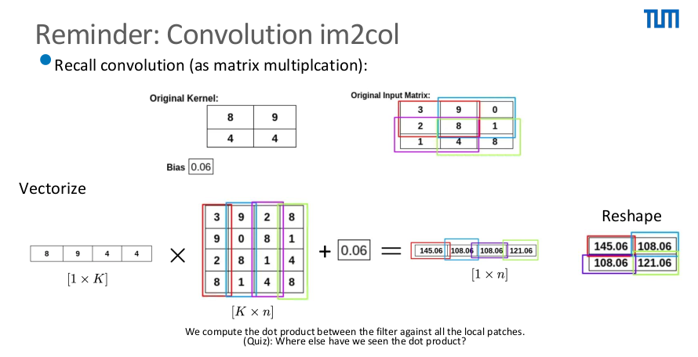
而在video object segmentation里我们已经见过correlation layer：把两个feature map 拉平，两两做dot product得到相似度矩阵 \(s_{ij} = f_i^\top f_j\) 值得注意的是 在correlation layer的计算中是fixed operation，没有可学习的权重：
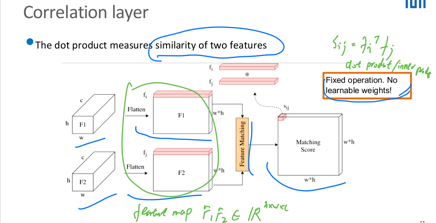
既然卷积是"feature和固定filter做dot product"，correlation是 "feature和feature做dot product"，那么我们想：如果先得到每个位置的feature （这些feature可以由convolution提取local context），然后让每个位置和所有其他 位置的feature做correlation，得到相似度，再用这些相似度加权聚合（weighted aggregation）其他位置的feature，这就是最朴素的self-attention思想。
那么把correlation layer的思路总结起来。我们为了得到相似度，先用来自第一个 feature map的一个input vector \(x_i\) 与来自第二个feature map的input vector \(x_j\) 做dot product，得到一个scalar（标量），这一步被称作feature matching。 这个scalar \(w'_{ij}\) 表示了 \(i\) 和 \(j\) 的相似度（在 note 3我们解释了为什么向量的dot (inner) product 代表相似度）。虽然向量点乘是对称的（\(x_1^\top x_2\) 和 \(x_2^\top x_1\) 是同一个 scalar），但是矩阵行列顺序会有变化，所以matching score矩阵代表F1对F2的相似度。
在attention中，我们希望用这个相似度作为权重（归一化处理后）再乘上F2的矩阵 用于聚合信息（aggregate the information），相当于对F2进行加权求和，表示F1 关注了F2的哪些信息，这就是最simple的attention；当两份feature来自同一个 input（F1 = F2）时，就是simple self-attention。
但把这种simple self-attention用到text上就暴露了问题。比如句子 "this restaurant was not too terrible"：
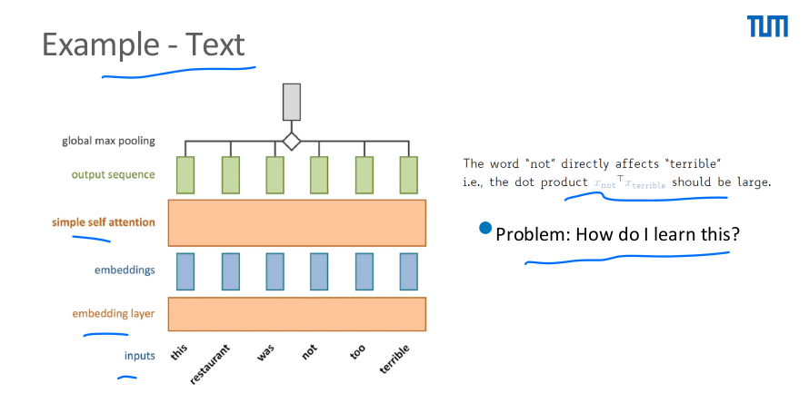
"not"直接影响"terrible"的含义，我们希望dot product \(x_{not}^\top x_{terrible}\) 很大， 但是simple self-attention里没有任何可学习的参数，所以这种关系学不到 （Problem: How do I learn this?）。解决的直觉是给每个token配上可学习的线性映射， 把同一个token投影成不同的"角色"再做dot product，这就引出了Q、K、V。
1.2 Attention and self-attention
从1.1得知，我们如果想让F1关注聚合F2，需要一个来自F1的向量和一个来自F2的向量复制两份。 那么如果我们希望input可以关注聚合自己的信息呢？那么同样的我们就需要复制三份，所以 每个input vector同时扮演三个角色：
- query：拿去和别人比较（"我在找什么"）
- key：被别人比较（"我是什么"）
- value：比较完之后被取走的内容（"我能提供什么"）
在1.1的simple self-attention里，三个角色都是同一个 \(x\)：
（\(w_{ij}\) 是原始分数 \(w'_{ij}\) 沿 \(j\) 做softmax归一化后的权重，下同。）
现在引入trainable weights and biases，让每个角色有自己的投影：
其中 \(q = Qx + b\)（\(k\)、\(v\) 同理）。1.1结尾"怎么学"的答案就在这些投影矩阵里。
顺带一提：还可以在权重矩阵上强加结构来引入inductive bias。比如autoregressive text：模型不能偷看后面的词，就只对 \(j \le i\) 的token求和 \(y_i = \sum_{j \le i} w_{ij} x_j\)，写成矩阵形式就是给 \(W\) 套一个下三角mask。
把上面这套写成矩阵形式、标清维度，就是Attention的正式定义。给定：
- query矩阵 \(Q \in \mathbb{R}^{S \times n}\)：当前元素（比如当前这个词）
- key矩阵 \(K \in \mathbb{R}^{T \times n}\)：被比较的元素
- value矩阵 \(V \in \mathbb{R}^{T \times m}\)：比较的权重对应取出的内容
QUIZ为什么要除以scaling factor \(\sqrt{n}\)？
假设 \(q_i, k_i \sim \mathcal{N}(0,1)\)，那么 \(q^\top k = \sum_{i=1}^{n} q_i k_i\) 的 方差约为 \(n\)，标准差约 \(\sqrt{n}\)。所以n越大，进softmax的数值就越大，softmax饱和后 梯度消失（vanishing gradient）。除以 \(\sqrt{n}\) 就是把量级拉回来，因此叫 scaled dot-product attention。
QUIZ输出的维度是多少？
\(\mathbb{R}^{S \times m}\)，也就是"for every query we fetch the corresponding value"： S个query，每个query取回一个m维的value加权和。
Self-attention就是Q、K、V全部来自同一个输入。输入 \(X \in \mathbb{R}^{T \times d}\) （T个d维token），定义4个可学习的线性映射 \(W^Q, W^K \in \mathbb{R}^{d \times n}\)、\(W^V \in \mathbb{R}^{d \times m}\)、 \(W^O \in \mathbb{R}^{m \times d}\)：
输入 \([T \times d]\)、输出 \([T \times d]\)，可以像卷积层一样堆叠成深层网络。 完整的计算流程（对第三个元素算attention value）：
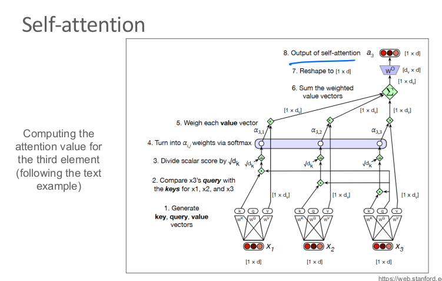
复杂度：需要算 \(T \times T\) 的pairwise相似度矩阵，所以memory是 \(O(T^2)\)、 runtime是 \(O(T^2 n)\)，对token数量是二次的。这个伏笔在Swin那里回收。
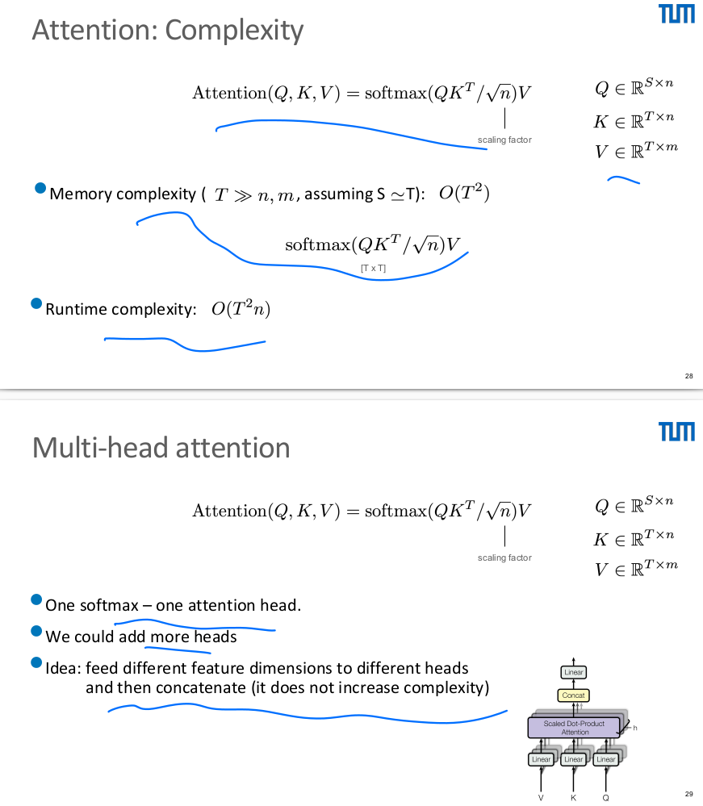
Multi-head attention：一个softmax就是一个attention head。把feature维度切给 Z个head、各自做attention再concatenate（过 \(W^O\) 投影回d维）：
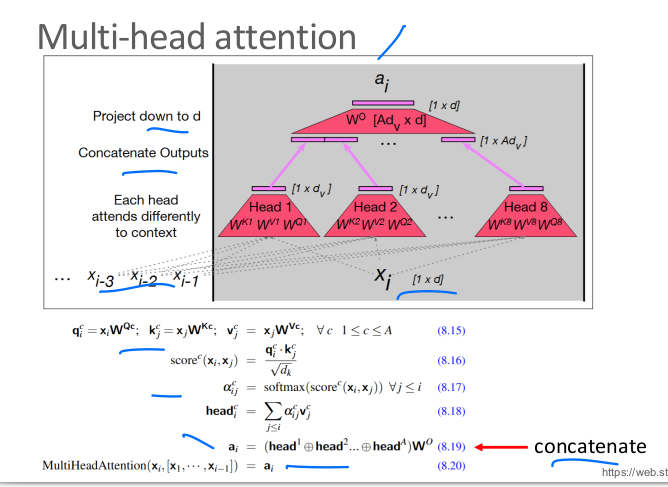
- 条件：Q、K、V的feature维度要能被head数整除
- Z个head让一个query最多取回Z种不同的value，建模更复杂的token间关系
- 复杂度不增加，因为可以并行，实际wall time反而更快
Normalisation：两个标准改进（Vaswani et al., 2017）： residual connection（把原始token feature加回去）+ layer normalisation（Ba et al., 2016， 每个token feature对自己的均值方差归一化）：
但还剩一个根本问题：整套计算里没有位置信息。self-attention对token是 permutation-equivariant的：把输入顺序打乱，每个query取回的value完全不变。 "猫咬狗"和"狗咬猫"在它眼里一样，这显然不行。
1.3 Positional encoding
在原始论文里，解决办法是给每个token index 配一个唯一的位置向量（PE矩阵的一行），和input embedding逐元素相加：
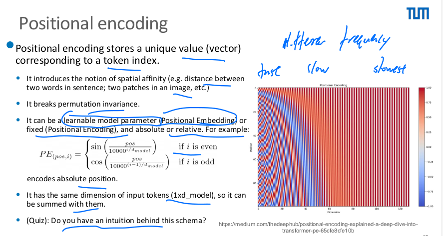
- PE引入了spatial affinity的概念（句子里两个词的距离、图片里两个patch的距离）， 打破了permutation invariance
- 可以是学出来的（positional embedding）或固定的（positional encoding）， 绝对或相对位置都行。原论文用固定的sinusoidal编码：
- 上图右侧热力图：不同维度对应不同频率（低维快、高维慢），编码绝对位置
- PE和token同维度（\(1 \times d_{model}\)），所以可以直接相加
Self-attention recap：
- 非常versatile：任意token数；head数、feature维度都是design choice
- 计算量对token数二次增长（pairwise相似度矩阵）
- 本身permutation-equivariant，绝对/相对位置靠PE补上
推荐一个交互式可视化：Transformer Explainer。 可以在浏览器里输入一句话，逐步看Q/K/V怎么算、attention矩阵长什么样、 每个head在关注什么，比静态公式直观得多。
1.4 ViT
那么transformer能不能搬到视觉上？ Dosovitskiy et al., 2020 的 ViT (Vision Transformer)给出了肯定答案：在classification上和CNN有竞争力， 思路是把图片切成patch序列，几乎不改NLP的Transformer：
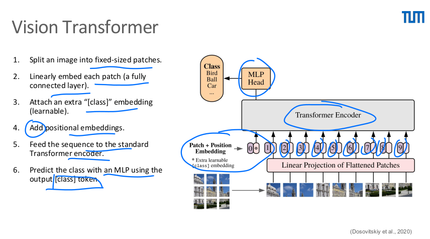
- 把图片切成固定大小的patch
- 每个patch过一个全连接层linearly embed成token
- 额外接一个可学习的[class] token
- 加上positional embedding
- 喂给标准Transformer encoder
- 最后只取[class] token的输出，过一个MLP head做分类
实验结论：
- ViT只有在超大数据集（JFT，300M张图）上预训练才好，因为它 没有CNN的inductive bias：locality（self-attention是全局的）、 2D邻域结构（位置关系全靠数据学）、translation invariance
- 但意义重大：language和vision从此用同一套计算框架
1.5 Swin Transformer
ViT的问题（回顾1.2的伏笔）：
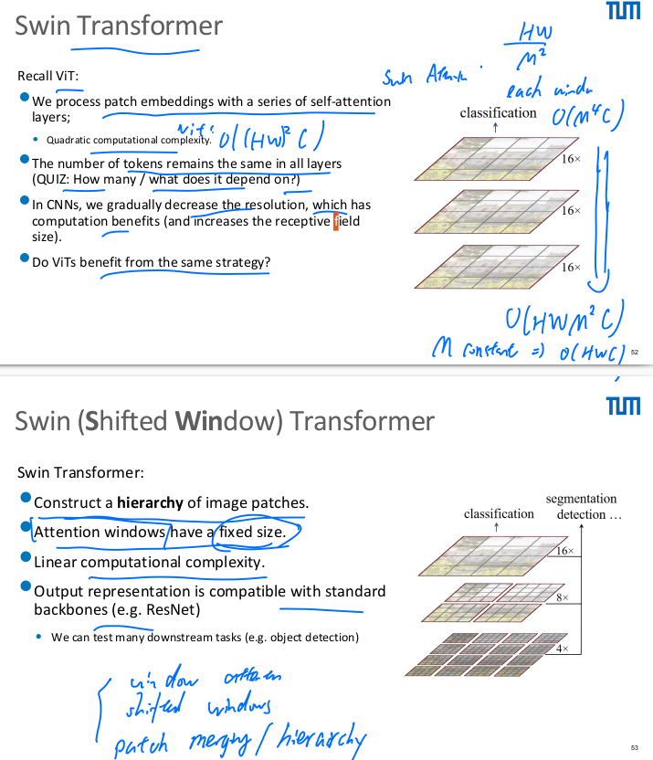
- self-attention复杂度是 \(O((HW)^2 C)\)，对图片分辨率二次爆炸
- 所有层的token数量不变；而CNN是逐层降分辨率的（省计算、扩receptive field）， ViT享受不到这个好处
Swin Transformer（Shifted Window） 用三个设计解决，把复杂度降到线性：
① Window attention（解决二次复杂度）：只在固定大小 \(M \times M\) 的 local window内做self-attention。每个window内是 \(O(M^4 C)\)，全图 \(O(HW \cdot M^2 C)\)。因为M是常数，所以总复杂度是 \(O(HWC)\)，对分辨率线性。
② Shifted windows（解决window割裂全局context）：naive的固定window会让 context不再是全局的，因为相邻window之间永远不交流。解决办法是相邻两层交替偏移 window的划分，让上一层不同window里的feature在下一层进到同一个window：
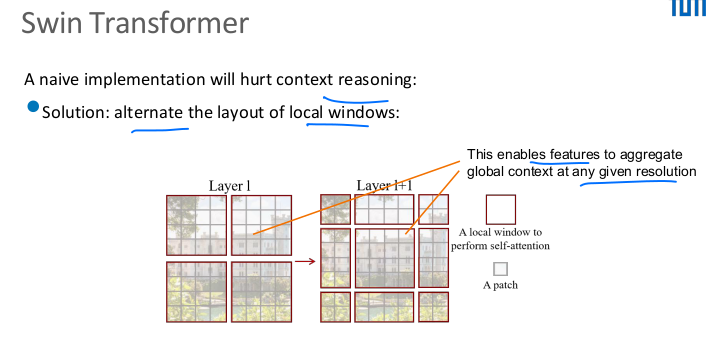
这样任意分辨率下feature都能逐层聚合全局context。
③ Patch merging（引入层级/hierarchy）：像CNN一样逐stage降分辨率。做法是把 \(2 \times 2\) 的C维patch拼接成4C维，再线性投影到2C维：分辨率减半、通道翻倍， 得到 \(\frac{H}{4} \times \frac{W}{4} \times C \to \frac{H}{32} \times \frac{W}{32} \times 8C\) 的层级式backbone，输出和ResNet等标准backbone兼容，可以直接接 detection/segmentation的下游头：
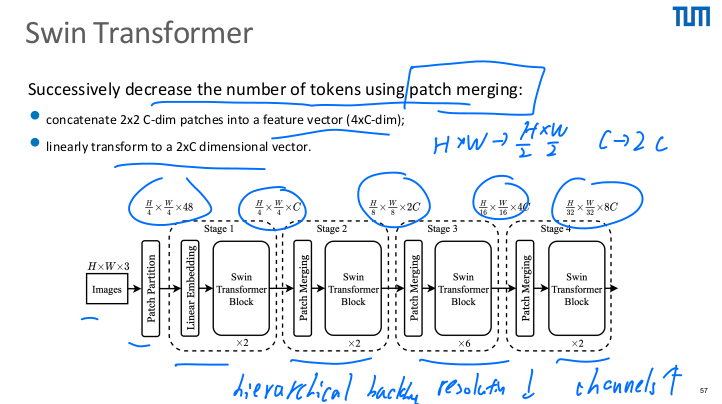
结果：
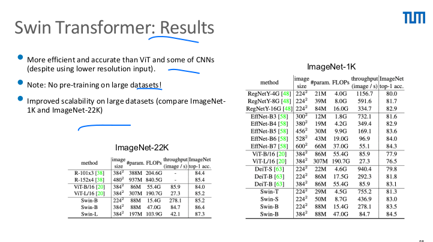
- 比ViT和不少CNN更快更准（还用着更低的输入分辨率），不需要大数据集预训练
- ImageNet-1K到22K的scalability更好
Summary：Swin把CNN的inductive bias（locality、hierarchy）和Transformer调和到了 一起；classification / detection / semantic segmentation全面SOTA；线性复杂度； 证明了Transformer是全能的视觉backbone。ICCV '21 best paper。
1.6 DETR
Transformer能不能直接做detection？关键观察：object detection本质是set prediction，我们并不关心bounding box的输出顺序。而Transformer恰好擅长处理 set。那就直接把detection建模成set prediction！ （DETR, Carion et al., 2020）
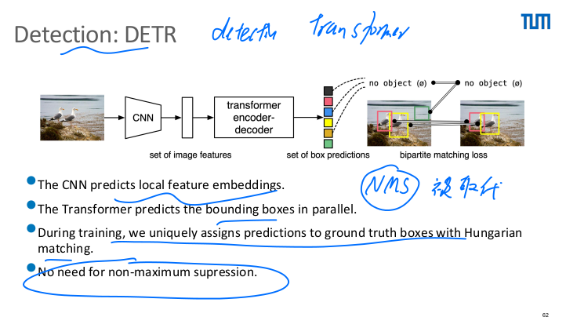
- CNN backbone学出2D feature（local feature embeddings）
- Transformer并行预测所有bounding box
- 训练时用Hungarian matching把prediction和ground truth一一对应
- 不需要NMS，空类或低置信度的box直接丢掉即可
A closer look：
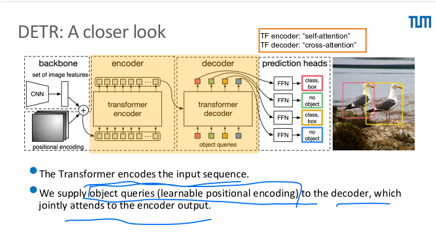
- feature拉平、加positional encoding后进Transformer encoder（self-attention）
- 向decoder输入object queries（可学习的positional encoding），decoder对 encoder输出做cross-attention
- 每个query的输出embedding过共享的FFN，预测一个detection （class logits + 归一化的box坐标）或"no object"类
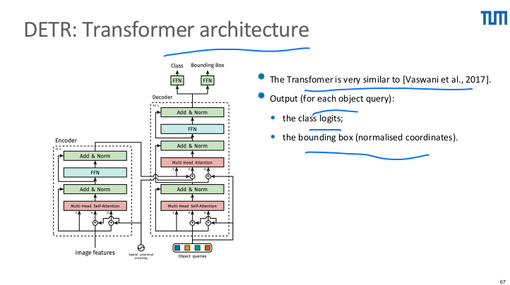
架构和Vaswani et al., 2017非常接近。
Loss为什么有问题？ 模型输出的是无序的set：N个query各吐出一个预测， 但没有任何顺序约定，所以我们不知道哪个预测该和哪个GT box配对。配对错了， loss就会惩罚一个其实预测得不错的query、奖励一个预测得差的，梯度方向全乱。 因此算loss之前必须先解决assignment问题。
为什么用Hungarian matching？ 我们需要的是prediction和GT之间代价最小的 一一对应（cost综合了分类置信度和box的接近程度）。这正是经典的bipartite matching问题，Hungarian算法可以在多项式时间内给出最优解， 在note 2的MOT里我们已经用过它做data association。匹配好之后， 每对之间正常算分类loss和box loss，没匹配到GT的query学"no object"类。
完整的loss（Hungarian loss）：
逐项解释：
- \(\hat{\sigma}\)：第一步Hungarian matching算出的optimal assignment， \(\hat{\sigma}(i)\) 就是分配给第 \(i\) 个GT的那个prediction
- \(-\log \hat{p}_{\hat{\sigma}(i)}(c_i)\)：classification loss，即该prediction 给真实类别 \(c_i\) 的概率取负对数。注意GT集合里补了empty（\(\varnothing\)，no object）， 因为query数N远多于真实物体数，配不到GT的query在这一项里学 \(\varnothing\) 类
- \(\mathbb{1}_{\{c_i \neq \varnothing\}}\)：指示函数，只有真实物体才算box loss， 因为 \(\varnothing\) 类没有box可回归
- \(\mathcal{L}_{\text{box}}\)：bounding box loss，展开是L1和GIoU的组合：
- \(\|b_i - \hat{b}_{\sigma(i)}\|_1\)：L1项关心的是box参数差了多少 （center/width/height的数值距离）
- \(\mathcal{L}_{\text{iou}}\)：generalised IoU项，关心的是overlap的质量
- \(\lambda_{\text{iou}}, \lambda_{\text{L1}}\)：两个超参，平衡两项
为什么要两个一起用？因为L1单独用有坑：它的惩罚和IoU脱节， L1相同的预测，IoU可以差很多：
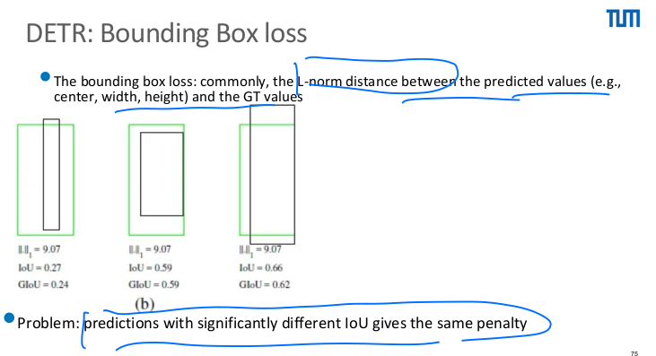
那直接用IoU做loss呢？也不行，因为两个box完全不重叠时IoU恒为0，无论错得多 离谱梯度都是0（vanishing gradient）。解决：GIoU （Rezatofighi et al., 2019）：
其中C是同时包住prediction和GT的最小convex hull。不重叠时GIoU由包络框里的 "空隙"决定（可以到-1），预测越远惩罚越大，梯度不再消失：
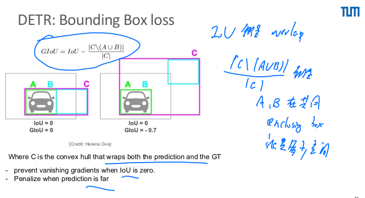
结果：encoder的self-attention就能把instance分开：
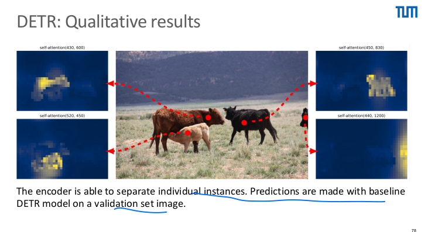
Summary：架构（相对）简单、检测准确、不需要NMS，小改动就能做panoptic segmentation。问题：计算和显存开销大（尤其显存）、收敛慢训练久，后来的 Deformable DETR（ICLR 2021）解决了这两点。
1.7 MaskFormer
那么transformer能不能用于semantic和panoptic segmentation？
先回顾Panoptic FCN（note 3）：它已经是一个统一semantic和panoptic的模型， 思路是为每个thing/stuff生成一组kernel，拿kernel去和encoded feature做卷积， 每个kernel"印"出一张mask。MaskFormer从这里得到的idea是： 这些kernel何必手工设计生成机制，直接用Transformer的learnable queries算出来 （Cheng et al., 2021）。
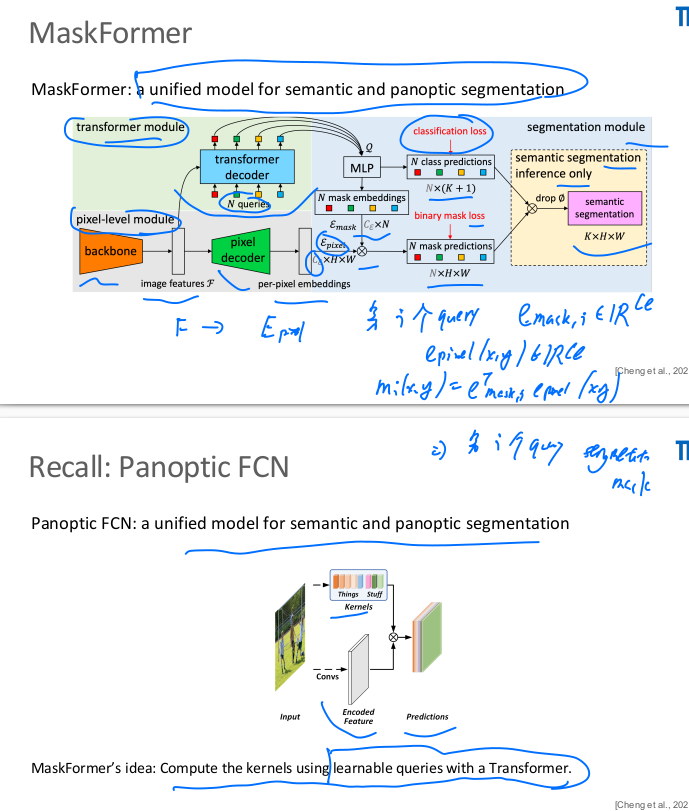
架构分三个模块：
- Pixel-level module：backbone提取image features \(\mathcal{F}\)， pixel decoder上采样得到per-pixel embeddings \(\mathcal{E}_{pixel} \in \mathbb{R}^{C_e \times H \times W}\)
- Transformer module：transformer decoder拿着N个learnable queries 对image features做cross-attention，每个query输出一个segment embedding
- Segmentation module：每个query的embedding过MLP分出两路，一路预测 class（K+1类，含"no object"，接classification loss），一路变成 mask embedding \(e_{mask,i} \in \mathbb{R}^{C_e}\)。第i个mask就是它和 per-pixel embedding的dot product：
也就是说每个query对应一对(class, binary mask)，这个视角叫mask classification：不再像FCN那样对每个pixel做分类（per-pixel classification）， 而是预测一个(类别, 掩码)对的set。训练同样用Hungarian matching配对， mask接binary mask loss。semantic segmentation的inference只需把class概率和 mask做矩阵乘、丢掉"no object"即可，所以一个模型统一了semantic和panoptic。
MaskFormer设计上的问题（课件没讲，这里补上）：它几乎原样继承了DETR的 训练机制，所以也继承了DETR的毛病：
- cross-attention是全局的：每个query一开始要在整张feature map上"漫游"， 很久才学会聚焦到自己负责的物体上，所以收敛慢、训练贵（300 epochs起步）
- 单尺度：transformer decoder只看backbone最后一层的低分辨率特征， 小物体和精细边界很差
- mask loss在全分辨率的mask上算，显存开销大
- 结果上最致命的：instance segmentation明显不行。用Mask2Former论文里的 对比数字（COCO/ADE20K）：
| 任务 | 当时的专用SOTA | MaskFormer | Mask2Former |
|---|---|---|---|
| Panoptic (PQ) | 51.1 (Max-DeepLab) | 52.7 | 57.8 |
| Instance (AP) | 49.5 (Swin-HTC++) | 40.1 | 50.1 |
| Semantic (mIoU) | 57.0 (BEiT) | 55.6 | 57.7 |
MaskFormer的panoptic和semantic都不错，但instance比专用模型低了整整9个点， "统一模型"的说法当时还站不住。
1.8 Mask2Former
为了解决上面这些问题（聚焦慢、单尺度、训练贵、instance差）， Mask2Former对MaskFormer做了三处关键改动：
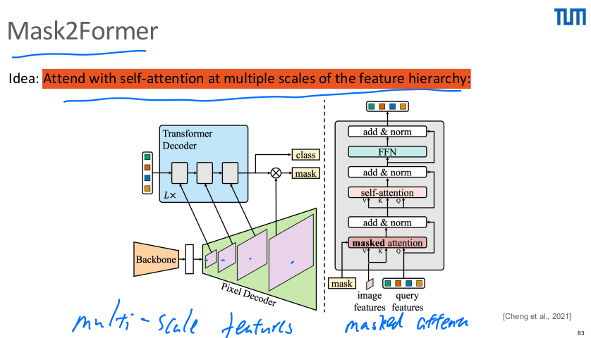
改动① Masked attention（最核心）。idea是把cross-attention约束在当前query 对应的前景区域内。对比标准attention：
其中 \(\mathbf{M}_{l-1}\) 是上一层预测的mask二值化的结果：mask内的位置加0 （正常参与attention），mask外加 \(-\infty\)（softmax后权重为0，等于被剪掉）。 这样query不再全图漫游，只在和自己高度相关的context里取信息，收敛快非常多。
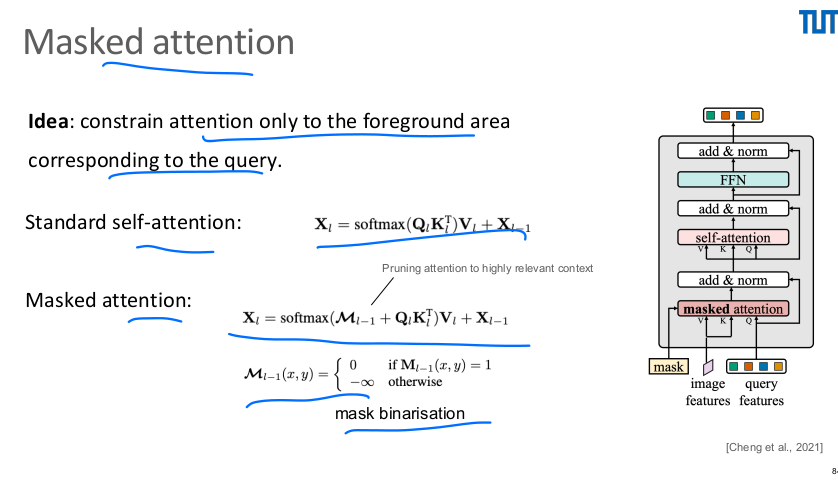
这个设计过程本身有两个问题要解决：一是第一层还没有mask可用， 解决办法是用初始query \(\mathbf{X}_0\) 先预测一个粗mask来启动；二是mask预测 错了attention会被锁死在错误区域，解决办法是每一层都重新预测mask， 逐层修正，错误不会一路传下去。另外decoder块里把self-attention挪到了 masked attention之后，让query先从图像取到信息、再互相交流。
改动② 多尺度特征。pixel decoder输出多个分辨率的feature，轮流（round-robin） 喂给连续的decoder层，高分辨率层专门救小物体。
改动③ 训练效率。mask loss不再在全图上算，而是学note 3里PointRend的思路， 只在K个importance-sampled的点上算，显存降到约1/3。
结果：三个任务同时超过各自的专用SOTA（对比数字见上表），真正做到了 "一个架构通吃segmentation"。而且注意一个概念上的变化：模型里再也没有 things/stuff的区分，这些概念被queries抽象掉了。
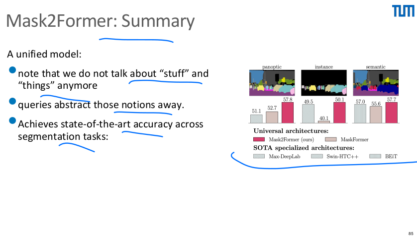
Mask2Former还有什么问题：
- 架构统一了，但每个任务仍要单独训练一个模型（semantic/instance/panoptic 三份权重），后来的OneFormer就是冲着这个来的
- 小物体虽有改善，仍是短板；显存和算力开销依然不小
- masked attention依赖mask质量，早期层mask差时会浪费一部分容量
1.9 Conclusions and what came after
结论：Transformer先革了NLP的命，然后通过ViT和DETR把 冲击带进了视觉。作为CNN的补充，它在classification、detection、tracking、 image generation上都达到了SOTA。但要泼一盆冷水：这些成绩往往是用更大的 算力预算换来的，GPU更大、训练更久。
这份课件停在了2021年，下面把detection、segmentation和tracking这几条 transformer主线往后补到今天（这部分是我自己整理的，不在课件里；backbone 预训练和SSL的进展放在第2、3章，这里不重复）。
Detection / Segmentation这条线：
- 2020，DETR：开创set prediction范式。 问题：收敛极慢（500 epochs）、小物体差
- 2021，Deformable DETR：attention不再看全图， 每个query只在reference point周围采样少数几个点，天然支持多尺度。 收敛快10倍、小物体明显改善。问题：query还是黑盒，训练前期匹配仍不稳
- 2022，DAB-DETR：把query显式建模成 动态anchor box（x, y, w, h），逐层refine，query从此可解释。 问题：Hungarian matching本身的不稳定还没解决，同一个GT在不同epoch 会被分给不同query，监督信号来回跳
- 2022，DN-DETR：正面解决匹配不稳定。 训练时额外喂一批加噪的GT box让decoder学去噪，这部分不走matching， 给模型稳定的监督。收敛再提速
- 2022，DINO（detection的DINO，和第2章 SSL的DINO重名但是两回事）：contrastive denoising + mixed query selection， DETR系首次登顶COCO榜，宣告这条路线全面成熟
- 2022，Mask DINO：把detection和 segmentation统一进同一个DETR框架，两边互相涨点
- 2022，OneFormer：解决Mask2Former "一任务一份权重"的问题，用task token做条件，一次训练同时拿下三个 segmentation任务
- 2023，Co-DETR：指出one-to-one matching 的监督信号太稀疏（一张图几十个GT，几百个query大部分学∅），训练时加 one-to-many的辅助分支增稠监督，COCO再创新高
- 2023，RT-DETR：DETR系一直上不了实时赛道， RT-DETR用高效hybrid encoder + IoU-aware query selection，首次在实时检测上 打赢YOLO系，而且天生NMS-free，部署链路更干净
- 2024，D-FINE：把box回归重新定义成 逐层细化的分布预测（不再直接回归坐标），实时精度继续涨
- 2024–2025，DEIM：matching带来的收敛慢 问题仍在，DEIM用改进的稠密匹配监督进一步加速收敛（CVPR 2025）
Tracking这条线（回忆note 2的分类：online只能看当前和过去帧、边看边出 结果，offline拿到整段视频后全局优化）：
- 2021，TransTrack（online）：最早把DETR 搬进MOT的尝试之一，两个decoder分别做detect和track，特征跨帧传递。 问题：本质还是"检测+关联"两步，端到端得不彻底
- 2022，TrackFormer（online）：提出 track query，每个已有轨迹用一个query在下一帧里"续命"，新目标由普通 object query发现，检测和跟踪同一个decoder完成，Hungarian matching只在 新生目标上做。问题：query之间抢容量，遮挡后re-ID弱
- 2022，MOTR（online）：把端到端做到最彻底， track query自回归地跨帧传播，连关联规则都不要了。问题：跟踪学好了， 检测明显掉点，detect query和track query互相打架
- 2022，GTR（offline/近线，clip级）：一次吃 一段clip，在窗口内用transformer做全局关联，是offline思想在transformer 时代的直接翻版
- 2022，ByteTrack（online，非transformer）： 一盆冷水式的reality check：不用任何端到端花活，强检测器 + Kalman + 低分框二次关联就在MOT17/20上吊打了当时所有端到端方法。结论和note 2 的直觉一致：MOT的第一要素仍是检测质量
- 2023，MOTRv2（online）：接受现实， 用YOLOX的proposal给MOTR补检测短板，端到端路线追回一城
- 2023，SUSHI（offline）：note 2里MPN那条 graph路线的正统续作（同一个组的工作），用层级图统一短时和长时关联， 证明offline图方法在长遮挡场景仍然最强
- 2024，MOTIP（online）：换个角度， 把association干脆建模成ID prediction，给每个目标直接预测身份编号， 简化了整个端到端管线
单目标跟踪（SOT）这边同样被transformer重写，代表作 STARK和 MixFormer（SOT按定义都是online）， 思路都是把template和search region丢进同一个attention里做关系建模， 正好是note 2里GOTURN"比较两帧"思想的attention版。
到我写这篇笔记的2026年：检测上，实时赛道基本是RT-DETR/D-FINE/DEIM这条 DETR系路线和YOLO系并立；跟踪上，端到端（tracking-by-attention）和 tracking-by-detection之争还没有定论，检测器的强弱仍然主导benchmark， 长遮挡下offline图方法保持优势。matching的稳定性、小物体、以及开放词汇 检测（open-vocabulary，和后面章节的预训练话题有关，这里按下不表） 仍然是open problems。 回头看整章的主线其实就一句话：attention把"和谁比较、取什么信息"变成了 可学习的，然后detection和segmentation都被改写成了set prediction。
2. Unsupervised (self-supervised) learning
2.1 Pretext tasks
(rotation, jigsaw puzzle, colorization, SSL on videos …)
2.2 Contrastive learning
(SimCLR, MoCo …)
2.3 Non-contrastive learning
(DINO, DINOv2, DINOv3, masked autoencoders …)
2.4 Evaluating SSL models
(linear probing, fine-tuning, k-NN …)
2.5 Downstream applications
(semantic segmentation, self-supervision in videos, segmentation from motion cues, contrastive random walk …)
2.6 Additional reading
(…)
3. Semi-supervised learning
3.1 The semi-supervised loss
(…)
3.2 Three assumptions
(smoothness, low-density, manifold …)
3.3 Two taxonomies
(…)
3.4 Unsupervised preprocessing
(…)
3.5 Self-training
(OnAVOS; SAM, SAM 2, SAM 3; self-training with pseudo-labels …)
3.6 Intrinsically semi-supervised methods
(entropy minimisation, virtual adversarial training …)
3.7 Learning from synthetic data
(domain alignment …)
3.8 Consistency regularisation
(…)
References
Transformers
- Vaswani et al. Attention Is All You Need. NeurIPS 2017.
- Ba et al. Layer Normalization. arXiv 2016.
- Dosovitskiy et al. An Image is Worth 16x16 Words (ViT). ICLR 2021.
- Liu et al. Swin Transformer. ICCV 2021.
- Carion et al. End-to-End Object Detection with Transformers (DETR). ECCV 2020.
- Rezatofighi et al. Generalized Intersection over Union (GIoU). CVPR 2019.
- Zhu et al. Deformable DETR. ICLR 2021.
- Cheng et al. Per-Pixel Classification is Not All You Need (MaskFormer). NeurIPS 2021.
- Cheng et al. Masked-attention Mask Transformer (Mask2Former). CVPR 2022.
- Polo Club. Transformer Explainer (interactive visualization).
Self-supervised learning
- Gidaris et al. Unsupervised Representation Learning by Predicting Image Rotations. ICLR 2018.
- Noroozi & Favaro. Solving Jigsaw Puzzles. ECCV 2016.
- Zhang et al. Colorful Image Colorization. ECCV 2016.
- Chen et al. A Simple Framework for Contrastive Learning (SimCLR). ICML 2020.
- He et al. Momentum Contrast (MoCo). CVPR 2020.
- Caron et al. Emerging Properties in Self-Supervised Vision Transformers (DINO). ICCV 2021.
- Oquab et al. DINOv2. arXiv 2023.
- Siméoni et al. DINOv3. arXiv 2025.
- He et al. Masked Autoencoders Are Scalable Vision Learners (MAE). CVPR 2022.
- Jabri et al. Space-Time Correspondence as a Contrastive Random Walk. NeurIPS 2020.
Semi-supervised learning
- Kirillov et al. Segment Anything (SAM). ICCV 2023.
- Ravi et al. SAM 2: Segment Anything in Images and Videos. arXiv 2024.
- Miyato et al. Virtual Adversarial Training. TPAMI 2018.
- van Engelen & Hoos. A Survey on Semi-Supervised Learning. Machine Learning 2020.
Comments